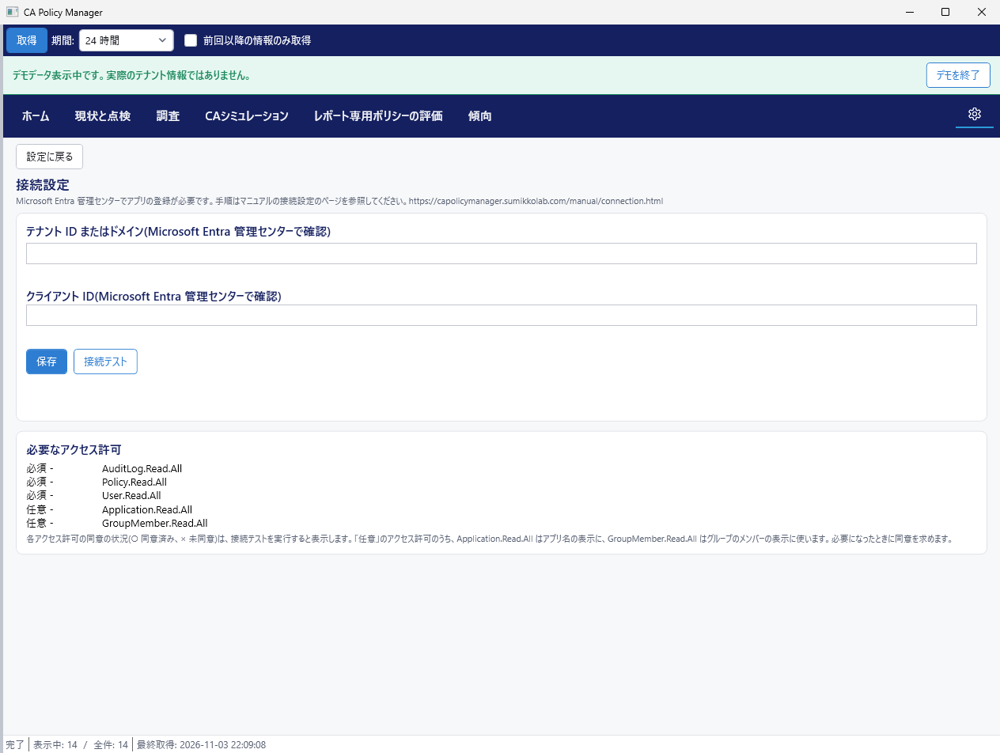

テナント ID とクライアント ID の入力、接続テスト
Microsoft Entra 管理センターでアプリの登録が必要です。登録がまだの場合は、先にアプリの登録の手順を実施してください。

テナント ID とクライアント ID は、この PC に暗号化して保存します。
接続テストを実行すると、必須のアクセス許可ごとに同意の状況を表示します。○ は同意済み、× は未同意です。任意のアクセス許可は接続テストの対象外です。Application.Read.All はアプリ名の表示に、GroupMember.Read.All はグループのメンバーの表示に使い、必要になったときにアプリが同意を求めます。
| 表示 | 対処 |
|---|---|
| 接続できました | ホームで「取得」を選択します。 |
| サインインできませんでした | テナント ID とクライアント ID を確認します。 |
| アクセス許可が不足しているか、管理者の同意が付与されていません | 管理者に同意の付与を依頼します。 |
| ネットワークに接続できません | ネットワークの接続を確認します。 |
| サービスが混み合っています | 時間をおいて、もう一度実行します。 |
| 接続を確認できませんでした | 入力内容を確認して、もう一度実行します。 |
最終更新: 2026-11-03